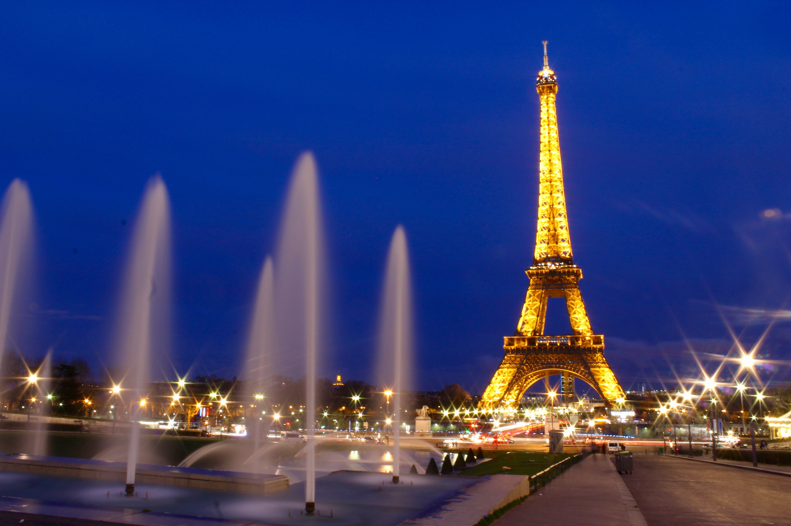

Paris, France
Welcome to Paris, the city of lights! Known for its iconic landmarks, world-class museums, delicious food, and rich culture, Paris is a dream destination for travelers. Whether you’re admiring the view from the Eiffel Tower or enjoying a café in Montmartre, there’s something magical about this beautiful city.
- The Eiffel Tower: No trip to Paris is complete without a visit to this iconic landmark. Take an elevator ride to the top for an unforgettable panoramic view of the city.
- The Louvre Museum: Home to the famous Mona Lisa and thousands of other works of art, the Louvre is one of the largest and most visited museums in the world.
- Notre-Dame Cathedral: Explore this stunning Gothic cathedral, known for its impressive architecture and beautiful stained-glass windows.
- Sacré-Cœur Basilica: Located at the highest point in the city, this basilica offers breathtaking views of Paris and a serene atmosphere.
- Champs-Élysées and Arc de Triomphe: Stroll along the famous avenue and visit the monumental Arc de Triomphe, honoring those who fought and died for France.
The best time to visit Paris is during the spring (April to June) and fall (September to November), when the weather is mild, and the city is less crowded. Summer can be hot and crowded, especially in tourist hotspots. Winter is quieter and offers lower hotel rates, but it can be cold and rainy.
Paris offers a wide range of accommodations, from luxurious hotels near the Champs-Élysées to charming boutique hotels in Montmartre. If you’re on a budget, consider staying in a hostel or renting an apartment in neighborhoods like Le Marais or the Latin Quarter. For a more upscale experience, stay at the Four Seasons Hotel George V or the Ritz Paris.
- Learn a Few French Phrases: While many Parisians speak English, knowing a few basic French phrases like “Bonjour” (Hello) and “Merci” (Thank you) can go a long way.
- Use the Metro: Paris has an excellent metro system, which is the fastest and most affordable way to get around the city.
- Don’t Skip the Croissants: No trip to Paris is complete without trying a freshly baked croissant from a local bakery. Paris is known for its delicious pastries!
- Be Prepared for Lines: Major attractions like the Eiffel Tower and the Louvre can have long lines, so consider booking tickets in advance to skip the wait.